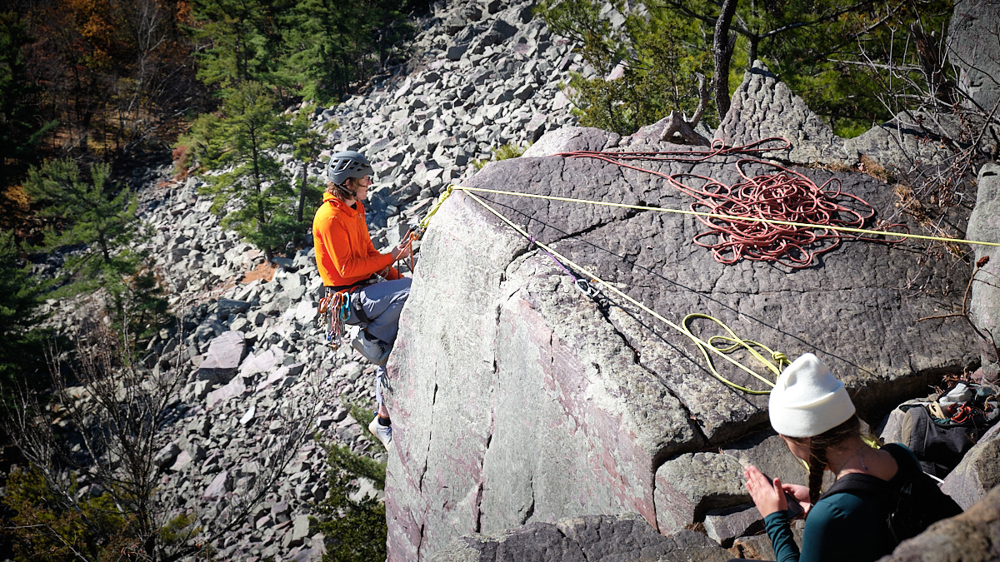
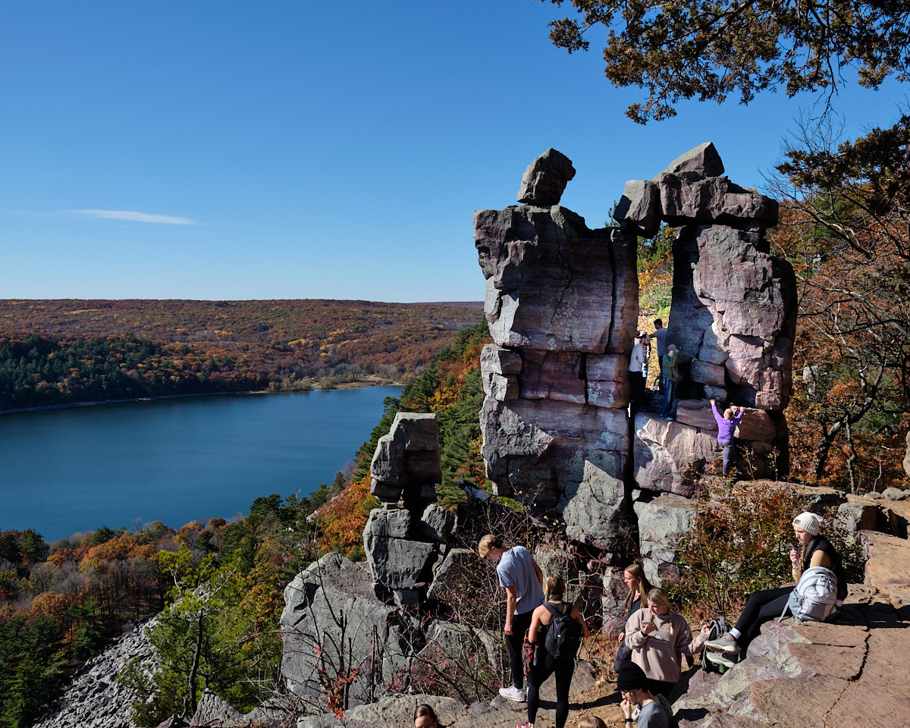
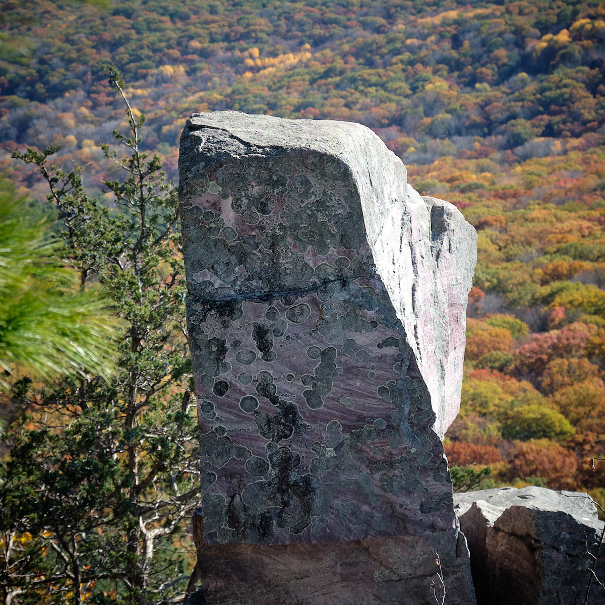
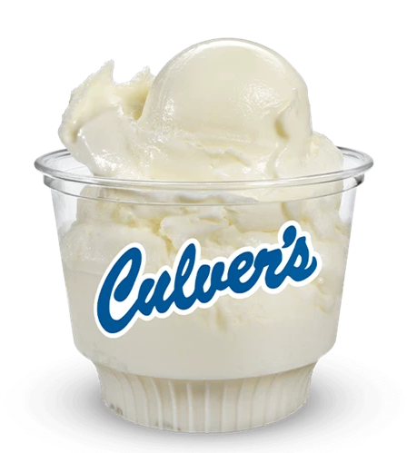

On a beautiful fall Saturday, my colleague David from the University joined me for one of Wisconsin’s classic hikes: Devil’s Lake. This state park is about an hour’s drive from Madison. David drove us in his new plug-in Prius and it was a crisp, sunny October day.
We did not climb up the hard way, as shown in the picture below. But it was a steep climb up nicely placed rock “stairs” held together with concrete. The bluffs rise about 500 feet from the level of the lake.

Along the way we took a detour to see the “Devil’s Doorway.” This was a very popular balancing rock. From here we could see the many colors of the leaves below.

I particularly liked this rock spotted with lichen.

On the backside of East Bluff, there was a beautiful yellow forest. You can click any of the three pictures to get bigger images.


The hike over East Bluff and then around the lake took a little less than 3 hours.
Afterwards, we passed through Sauk City which is the home of the original Butter Burger. We earned one. So we stopped at Culver’s. Culver’s is a Wisconsin institution. I veered from the purist butter burger by having mine on sourdough. And I particularly liked the vanilla frozen custard. Yum!
